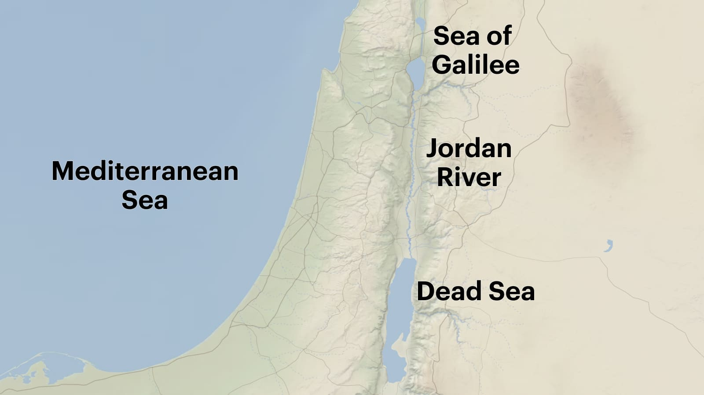
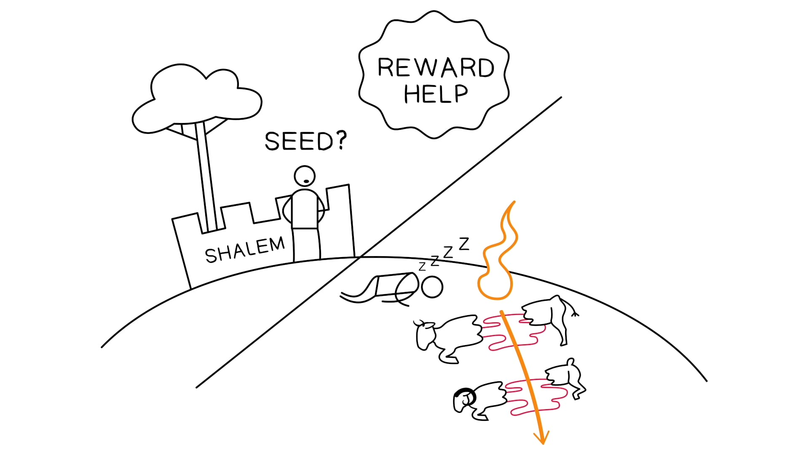

77 E ele lhe disse:And he said to him,
“Eu sou Iavé, que te tirei de Ur dos Caldeus,“I am Yahweh who brought you out of Ur of the Chaldeans,
para te dar esta terrato give you this land , , para a possuíres.”to possess it.”
88 E ele disse:And he said,
“Ó Soberano Deus, como poderei saber que a possuirei?”“O Lord God, how may I know that I will possess it?”
99 Então ele lhe disse:So he said to him,
aa“Traze-me uma novilha de três anos,“Bring me a three year old heifer,
bbe uma cabra de três anos,and a three year old female goat,
cce um carneiro de três anos,and a three year old ram,
e uma rola,and a turtledove,
e um pombo novo.”and a young pigeon.”
aa1010 E ele lhe trouxe todos estesAnd he brought all these to him
b'b'e os partiu ao meioos partiu ao meio pelo meio,and he halved themhe halved them in the middle,
e pôs cada metade defronte da outrapôs cada metade defronte da outra,and he laid each half to meet its neighborhe laid each half to meet its neighbor,
c'c'mas as aves ele não partiu.but the birds he did not halve.
1111 E aves de rapina desceram sobre os cadáveres,And there came down birds of prey upon the carcasses,
e Avram as enxotou.and Avram blew them away.
1212 E acontecia que, ao pôr-do-solAnd it came about as the sun was going down , ,
aaum sono profundoa deep-sleep
bbcaiu sobre Avram;fell upon Avram;
a'a'e eis, terror e grande escuridãoterror e grande escuridãoand behold, terror and great darknessterror and great darkness
b'b'caiu sobre ele.fell upon him.
1313 E Deus disse a Avram:And God said to Avram,
“Sabe com certeza que a tua semente será imigrante numa terraa tua semente será imigrante numa terra que não é sua,“Know for certain that your seed will be immigrants in a landyour seed will be immigrants in a land that is not theirs,
e será escravizada a ela,and they will be enslaved to them,
e a oprimirão por quatrocentos anosquatrocentos anos.and they will oppress them four hundred yearsfour hundred years.
1414 Mas também eu mesmo julgarei a nação a quem servirem,But also that I myself will judge the nation whom to which they are slaves,
e depois disso sairão com muitas possessões.and afterward they will come out with many possessions.
1515 E quanto a ti, irás em paz aos teus pais;And as for you, you shall go to your fathers in peace;
serás sepultado em boa velhice.you will be buried at a good old age.
1616 Então, na quarta geraçãoquarta geração eles voltarão para cá,Then in the fourth generationthe fourth generation they will return here,
porque a iniquidade do Amorreu não está completa até este ponto.”for the iniquity of the Amorite is not complete until this point.”
1717 E acontecia que, ao pôr-do-solAnd it came about as the sun went down , ,
que houve uma escuridão profundauma escuridão profunda,that there was a deep-darknessa deep-darkness ,
e eis, uma fornalha fumeganteuma fornalha fumegante,and behold, an oven smokingan oven smoking ,
e uma tocha de fogouma tocha de fogo,and a torch of firea torch of fire ,
que passou entre estes pedaçosentre estes pedaços.passed between these piecesbetween these pieces.
1818 Naquele dia Iavé fez uma aliança com Avram, dizendo:On that day the Lord made a covenant with Avram, saying,
“À tua semente dei esta terraÀ tua semente dei esta terra, desde o rio do Egito até o grande rio, o rio Eufrates:“To your seed I have given this landTo your seed I have given this land, from the river of Egypt as far as the great river, the river Euphrates:
1919 o queneu, o quenezeu e o cadmoneu,the Kenite and the Kenizzite and the Kadmonite
2020 e o heteu, o perizeu e os refains,and the Hittite and the Perizzite and the Rephaim
2121 e o amorreu, o cananeu, o girgaseu e o jebuseu.”and the Amorite and the Canaanite and the Girgashite and the Jebusite.”
Gênesis 15:7-21Gênesis 15:7-21. Tradução e Design Literário por Tim Mackie para o BibleProject Classroom: Abraham (2021).Genesis 15:7-21Genesis 15:7-21. Translation and Literary Design by Tim Mackie for BibleProject Classroom: Abraham (2021).
Observe a ênfase estrutural nos três discursos divinos; cada um foca nas promessas divinas de bênção de “semente” e “terra”. A Unidade A tem a promessa da terra para o próprio Avram, a Unidade A’ tem a promessa de que a sua semente futura será escravizada numa terra que não é sua, e a Unidade A” tem a promessa combinada de que a semente que sai e volta possuirá a terra prometida a Avram.Notice the structural emphasis on the three divine speeches; each one focuses on the divine blessing promises of “seed” and “land.” Unit A has the promise of land for Avram personally, Unit A’ has the promise of his future seed being enslaved in a land not their own, and Unit A” has the combined promise that the seed who leaves and comes back will possess the land promised to Avram.
Observe também como as aves sacrificais desempenham um papel proeminente no cenário do apocalipse e da aliança. Cada uma é descrita com linguagem que será ativada mais adiante nos padrões de design das narrativas de apocalipse e aliança.Also notice how the sacrificial birds play a prominent role in the setting of the apocalypse and the covenant. Each one is described with language that will be activated later on in the design patterns of apocalypse and covenant narratives.
99 Então ele lhe disse: “Traze-me uma novilha de três anos, e uma cabra de três anos, e um carneiro de três anos, e uma rola, e um pombo novo.”So he said to him, “Bring me a three year old heifer, and a three year old female goat, and a three year old ram, and a turtledove, and a young pigeon.”
1010 E ele lhe trouxe todos estes e os partiu ao meioos partiu ao meio pelo meio, e pôs cada metade defronte da outrapôs cada metade defronte da outra, mas as aves ele não partiu.And he brought all these to him and he halved themhe halved them in the middle, and he laid each half to meet its neighborhe laid each half to meet its neighbor, but the birds he did not halve.
1111 E aves de rapina desceram sobre os cadáveres, e Avram as enxotou.And there came down birds of prey upon the carcasses, and Avram blew them away.
1717 … e uma tocha de fogo passou entre estes pedaçosentre estes pedaços.… and a torch of fire passed between these piecesbetween these pieces.
1313 Assim diz o SENHOR, Deus de Israel: “Fiz uma aliança com vossos pais no dia em que os tirei da terra do Egito, da casa da servidão, dizendo … 1818 Entregarei os homens que transgrediram a minha aliança, que não cumpriram as palavras da aliança que fizeram diante de mim, quando cortaram o bezerro em dois e passaram entre os seus pedaços — 1919 os oficiais de Judá e os oficiais de Jerusalém, os oficiais da corte e os sacerdotes, e todo o povo da terra que passou entre os pedaços do bezerro — 2020 eu os entregarei nas mãos dos seus inimigos e nas mãos dos que procuram a sua vida. E os seus cadáveres servirão de alimento para as aves do céu e para os animais da terra.”1313 Thus says the LORD God of Israel, "I cut a covenant with your forefathers in the day that I brought them out of the land of Egypt, from the house of bondage, saying …
1818 I will give the men who have transgressed my covenant, who have not fulfilled the words of the covenant which they made before me, when they cut the calf in two and passed between its pieces— 1919 the officials of Judah and the officials of Jerusalem, the court officers and the priests and all the people of the land who passed between the pieces of the calf— 2020 I will give them into the hand of their enemies and into the hand of those who seek their life. And their dead bodies will be food for the birds of the sky and the beasts of the earth."
Palavras-chave adaptadas pelo professorKey Words Adapted by Teacher
O significado desta cerimônia de aliança é elaborado mais adiante por Jeremias. As metades dos animais representam a consequência de quebrar a aliança. Aqueles que caminham entre os pedaços ficam então obrigados a cumprir as suas obrigações aliançais. Se não o fizerem, o seu destino será como o destes animais cortados.The meaning of this covenant ceremony is elaborated further by Jeremiah. The animal halves represent the consequence of breaking the covenant. Those who walk between the pieces are then obligated to fulfill their covenant obligations. If they don’t, their fate will be like these severed animals.
É supremamente importante, então, que Deus não permita que Avram caminhe entre os pedaços. Em vez disso, Deus o incapacita, fazendo-o desmaiar à margem, enquanto somente Deus passa entre os pedaços. O simbolismo tem uma mensagem clara e poderosa: somente Deus será responsável pelo cumprimento da sua promessa, e ele carregará as consequências do fracasso e do sucesso de ambas as partes.It is supremely important, then, that God does not allow Avram to walk through the pieces. Instead, God incapacitates him, making him pass out on the sidelines, while God alone passes through the pieces. The symbolism has a clear and powerful message: God alone will be responsible for the fulfillment of his promise, and he will carry the consequences of the failure and success of both parties.
O aparecimento de Deus a Avram é a primeira vez que fogo e fumaça são associados à presença divina. Esta imagem continuará a se desenvolver ao longo da história bíblica e chegará ao seu ponto alto nos aparecimentos de Iavé no topo do Monte Sinai.God’s appearance to Avram is the first time that fire and smoke are associated with the divine presence. This imagery will continue to develop throughout the biblical story and will come to a high point in the appearances of Yahweh on top of Mount Sinai.
1212 E acontecia que, ao pôr-do-sol, um sono profundo caiu sobre Avram; e eis, terror e grande escuridãoterror e grande escuridão (חשכהחשכה / khashekahkhashekah) caiu sobre ele …And it came about as the sun was going down, a deep-sleep fell upon Avram; and behold, terror and great darknessterror and great darkness (חשכהחשכה / khashekahkhashekah) fell upon him …
1717 E acontecia que, ao pôr-do-sol, houve uma escuridão profundaescuridão profunda, e eis, uma fornalha fumegantefornalha fumegante (תנור עשןתנור עשן / tannur ’ashantannur ’ashan), e uma tocha de fogotocha de fogo (לפיד אשלפיד אש / lappid ’eshlappid ’esh) passou entre estes pedaços.And it came about as the sun went down, that there was a deep-darknessdeep-darkness, and behold, an oven smokingoven smoking (תנור עשןתנור עשן / tannur ’ashantannur ’ashan), and a torch of firetorch of fire (לפיד אשלפיד אש / lappid ’eshlappid ’esh) passed between these pieces.
1616 Ao amanhecer do terceiro dia houve trovões e relâmpagostrovões e relâmpagos, com uma nuvem espessanuvem espessa sobre o monte, e um sonido de buzina mui forte. Todo o povo que estava no arraial tremeu. 1717 Então Moisés levou o povo fora do arraial ao encontro de Deus; e puseram-se ao pé do monte. 1818 O monte Sinai fumegava todo, porque o SENHOR desceu sobre ele em fogofogo (אשאש / ’esh’esh); e a sua fumaçafumaça (עשןעשן / ’ashan’ashan) subiu como fumaça de uma fornalhacomo fumaça de uma fornalha, e todo o monte tremia grandemente.1616 On the morning of the third day there was thunder and lightningthunder and lightning, with a thick cloudthick cloud over the mountain, and a very loud trumpet blast. Everyone in the camp trembled. 1717 Then Moses led the people out of the camp to meet with God, and they stood at the foot of the mountain.
1818 Mount Sinai was covered with smoke, because the LORD descended on it in firefire (אשאש / ’esh’esh). The smokesmoke ( עשןעשן / ’ashan’ashan) billowed up from it like smoke from a furnacelike smoke from a furnace, and the whole mountain trembled violently.
Palavras-chave adaptadas pelo professorKey Words Adapted by Teacher
1818 Quando o povo viu os trovõestrovões e os relâmpagosrelâmpagos (לפידלפיד /lappidlappid), ouviu o sonido da buzina e viu o monte em fumaçafumaça (עשןעשן / ’ashen’ashen), tremeu de medo e ficou de longe … 2121 O povo permaneceu de longe, enquanto Moisés se aproximou da escuridão espessaescuridão espessa onde Deus estava.1818 When the people saw the thunderthunder and lightninglightning (לפידלפיד /lappidlappid) and heard the trumpet and saw the mountain in smokesmoke (עשןעשן / ’ashen’ashen), they trembled with fear. They stayed at a distance …
2121 The people remained at a distance, while Moses approached the thick darknessthick darkness where God was.
Palavras-chave adaptadas pelo professorKey Words Adapted by Teacher
1111 Vós vos chegastes e vos pusestes ao pé do monte, enquanto ele ardia em fogoardia em fogo até o céu, com nuvens negras e profunda escuridãonuvens negras e profunda escuridão. 1212 Então o SENHOR vos falou do meio do fogofogo. Ouvistes o som de palavras, mas não vistes forma alguma; havia somente uma voz.1111 You came near and stood at the foot of the mountain while it blazed with fireblazed with fire to the very heavens, with black clouds and deep darknessblack clouds and deep darkness. 1212 Then the LORD spoke to you out of the firefire. You heard the sound of words but saw no form; there was only a voice.
99 Ele fendeu os céus e desceu; havia densas nuvens (ערפלערפל / ’araphel’araphel) debaixo dos seus pés. 1010 Montou num querubim e voou; planou sobre as asas do vento. 1111 Fez das trevas (חשךחשך / khoshekkhoshek) o seu esconderijo, o seu dossel ao redor de si — espessas nuvens de escuridão (חשכהחשכה / khashekahkhashekah) nos céus. 1212 Do resplendor da sua presença avançaram nuvens, com saraiva e brasas de fogo (גחלי אשגחלי אש / gakhale ’eshgakhale ’esh).99 He parted the heavens and came down; dark clouds (ערפלערפל / ’araphel’araphel) were under his feet.
1010 He mounted the cherubim and flew; he soared on the wings of the wind.
1111 He made darkness (חשךחשך / khoshekkhoshek) his covering, his canopy around him—rain clouds of darkness (חשכהחשכה / khashekahkhashekah) in the sky.
1212 Out of the brightness of his presence clouds advanced, with hailstones and coals of fire (גחלי אשגחלי אש / gakhale ’eshgakhale ’esh).
Palavras-chave adaptadas pelo professorKey Words Adapted by Teacher
As fronteiras da terra prometida, que retomam as promessas de Gênesis 12:7Gênesis 12:7 e 13:14-1813:14-18, oferecem a primeira descrição aproximada da terra prometida a Avram.The boundaries of the promised land, which take up the promises of Genesis 12:7Genesis 12:7 and 13:14-1813:14-18, offer the first rough description of the land promised to Avram.
1818 Naquele dia Iavé fez uma aliança com Avram, dizendo: “À tua semente dei esta terra, desde o rio do Egito até o grande rio, o rio Eufrates:On that day the LORD made a covenant with Avram, saying, “To your seed I have given this land, from the river of Egypt as far as the great river, the river Euphrates:
1919 o queneu, o quenezeu e o cadmoneu,the Kenite and the Kenizzite and the Kadmonite
2020 e o heteu, o perizeu e os refains,and the Hittite and the Perizzite and the Rephaim
2121 e o amorreu, o cananeu, o girgaseu e o jebuseu.”and the Amorite and the Canaanite and the Girgashite and the Jebusite.”
Esta passagem nos convida a explorar um enigma de longa data que envolve dois padrões distintos de mapeamento encontrados nas descrições bíblicas da terra prometida.This passages invites us to explore a long-standing puzzle that involves two distinct mapping patterns found in biblical descriptions of the promised land.
No primeiro padrão de mapeamento, a terra prometida é limitada a oeste pelo Mar Mediterrâneo e a leste pelo Rio Jordão, com a fronteira nordeste subindo até a Síria e o Líbano.In the first mapping pattern, the promised land is bordered on the west by the Mediterranean Sea and on the east by the Jordan River, with the north-eastern boundary going up into Syria and Lebanon.
22 Ordena aos filhos de Israel e dize-lhes: “Quando entrardes em Canaã, esta é a terra que vos cairá por herança, e terá estes limites: 33 O vosso lado sullado sul incluirá parte do deserto de Zim, junto à fronteira de Edom. A vossa fronteira sul começará no leste, na extremidade sul do mar Morto … e [eventualmente] se unirá ao Riacho do Egito e terminará no mar Mediterrâneo. 66 A vossa fronteira ocidentalfronteira ocidental será a costa do mar Mediterrâneo. Esta será a vossa fronteira a oeste. 77 Quanto à vossa fronteira nortefronteira norte, traçai uma linha do mar Mediterrâneo até o monte Hor. 88 e do monte Hor até Lebo-Hamate; então a fronteira irá até Zedade, 99 continuará até Zifrom e terminará em Hazar-Enã — esta será a vossa fronteira ao norte. 1010 Quanto à vossa fronteira orientalfronteira oriental … ao longo das encostas a leste do mar da Galileia. 1212 Então a fronteira descerá ao longo do Jordão e terminará no mar Morto. Esta será a vossa terra, com os seus limites por todos os lados.”22 Command the Israelites and say to them: "When you enter Canaan, the land that will be allotted to you as an inheritance is to have these boundaries:
33 Your southern sidesouthern side will include some of the Desert of Zin along the border of Edom. Your southern boundary will start in the east from the southern end of the Dead Sea … and [eventually] join the Wadi of Egypt and end at the Mediterranean Sea.
66 Your western boundarywestern boundary will be the coast of the Mediterranean Sea. This will be your boundary on the west.
77 For your northern boundarynorthern boundary, run a line from the Mediterranean Sea to Mount Hor
88 and from Mount Hor to Lebo Hamath. Then the boundary will go to Zedad,
99 continue to Ziphron and end at Hazar Enan. This will be your boundary on the north.
1010 For your eastern boundaryeastern boundary … along the slopes east of the Sea of Galilee.
1212 Then the boundary will go down along the Jordan and end at the Dead Sea. This will be your land, with its boundaries on every side.”
Estabelecerei as tuas fronteiras desde o mar Vermelho até o mar Mediterrâneo, e desde o deserto até o rio Eufrates. Entregarei nas tuas mãos os moradores da terra, e tu os expulsarás de diante de ti.I will establish your borders from the Red Sea to the Mediterranean Sea, and from the desert to the Euphrates River. I will give into your hands the people who live in the land, and you will drive them out before you.
Todo lugar que a planta do vosso pé pisar será vosso: o vosso território se estenderá desde o deserto até o Líbano, e desde o rio Eufrates até o mar Mediterrâneo.Every place where you set your foot will be yours: Your territory will extend from the desert to Lebanon, and from the Euphrates River to the Mediterranean Sea.
O vosso território se estenderá desde o deserto até o Líbano, e desde o grande rio, o Eufrates — toda a terra dos heteus — até o mar Mediterrâneo, ao oeste.Your territory will extend from the desert to Lebanon, and from the great river, the Euphrates—all the Hittite country—to the Mediterranean Sea in the west.
2020 O povo de Judá e de Israel era numeroso como a areia da praia do mar; comiam, bebiam e se alegravam. 2121 E Salomão dominava sobre todos os reinos desde o rio Eufrates até a terra dos filisteus, até a fronteira do Egito. Estes países traziam tributo e foram súditos de Salomão durante toda a sua vida.2020 The people of Judah and Israel were as numerous as the sand on the seashore; they ate, they drank and they were happy.
2121 And Solomon ruled over all the kingdoms from the Euphrates River to the land of the Philistines, as far as the border of Egypt. These countries brought tribute and were Solomon’s subjects all his life.
Estes dois mapas parecem ter valores simbólicos diferentes, e por isso comunicam coisas diferentes.These two maps seem to have different symbolic value, so they communicate different things.
O Padrão 1 é menor e mais historicamente realista quanto às proporções reais do território de Israel. As fronteiras encolheram ao longo do tempo, à medida que perdiam cada vez mais terra para os seus vizinhos. Você poderia chamar este de “mapa realista”.Pattern 1 is smaller and more historically realistic to the actual proportions of Israel’s territory. The boundaries shrank throughout time, as they lost more and more land to their neighbors. You could call this the “realistic map.”
O Padrão 2 é muito maior e mais historicamente idealista. Por um breve período do reinado de Salomão, parece que ele teve influência sobre esta região, mas isso terminou rapidamente quando ele morreu. Este mapa, porém, tem valor simbólico ligado ao jardim do Éden, que era ele próprio a fonte destes dois rios.Pattern 2 is much larger and more historically idealistic. For a brief period of Solomon’s reign, it seems he had influence over this region, but it quickly ended when he died. This map, however, has symbolic value connected to the garden of Eden, which was itself the source of these two rivers.
Também há significado no fato de que os dois rios de cada lado desta descrição são as fontes de vida dos dois maiores inimigos imperiais de Israel na história bíblica: Egito e Babilônia.There is also significance in the fact that the two rivers on each side of this description are the life sources of Israel's two greatest imperial enemies in the biblical story: Egypt and Babylon.


Que significado podemos inferir do fato de somente Deus passar entre os animais na cena da aliança de Gênesis 15:7-21Gênesis 15:7-21?What meaning can we infer from God alone passing between the animals in the covenant scene of Genesis 15:7-21Genesis 15:7-21?
Openstreetmap.org.
Openstreetmap.org.